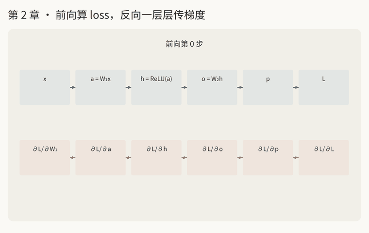
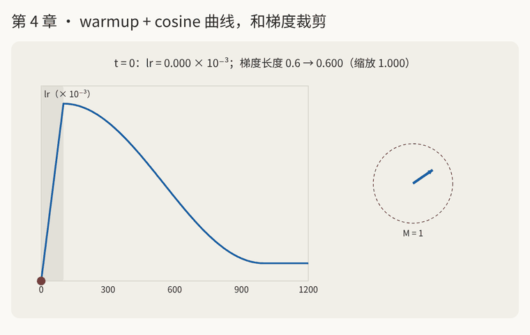
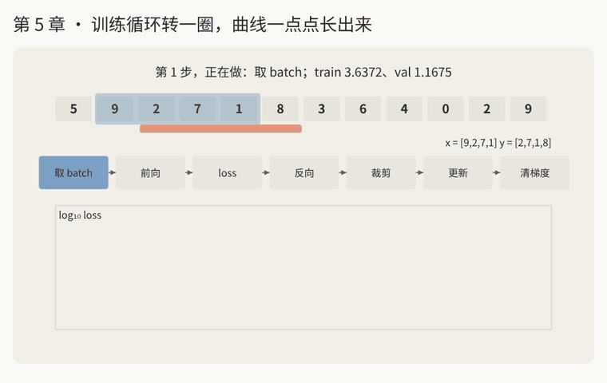
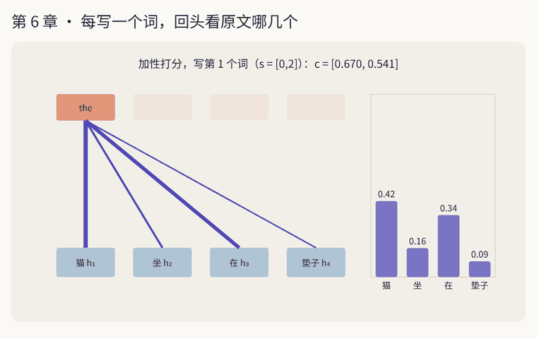
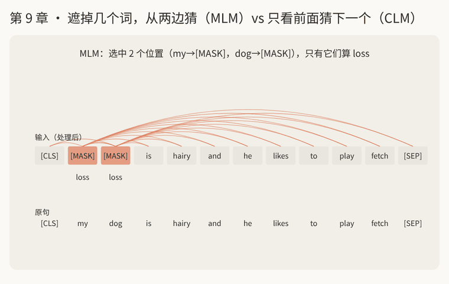
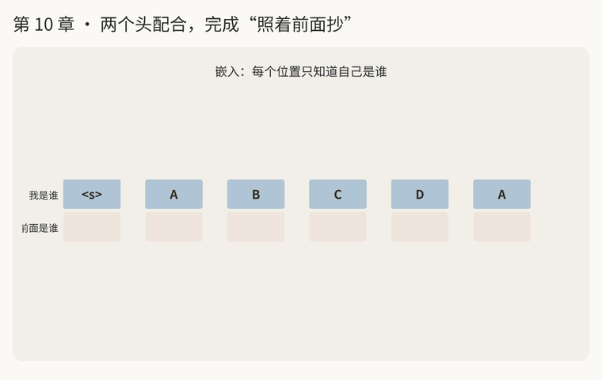
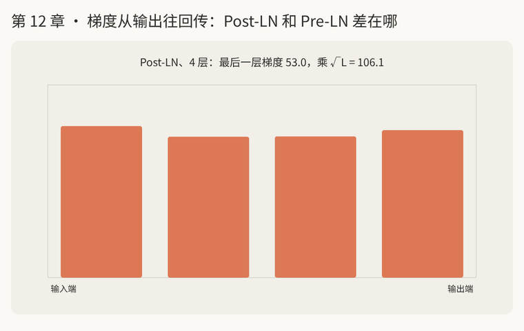
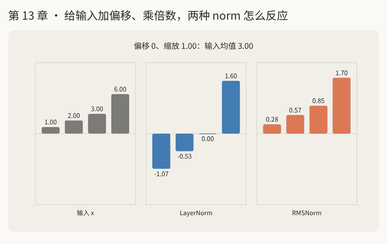
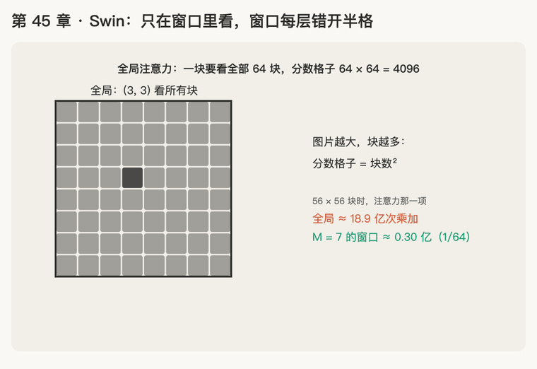

超越 Transformer
《从零读懂 Transformer》的续篇：从 2017 年的原版出发，讲训练基础、零件升级、现代大模型配方、MoE、高效注意力、线性注意力与 Mamba、视觉 Transformer。计划 51 章，已写 28 章。
前置：《从零读懂 Transformer》（24 章，原版 Transformer 从零讲起）。大纲里"前置"一栏的 T21 指它的第 21 章。
每章的结构：本章回答的问题 → 讲解（白话类比 → 公式 → 例子）→ 练习与作答记录 → 口诀 → 复习卡片 → 延伸阅读。
怎么看
- 讲义：每章正文里嵌着 GIF 动画，打开就能播放。
- 可交互动画：章节标题下的"打开本章可交互动画"，或点下面的卡片进入讲义后再打开。按钮：▶ 播放自动演示，→ 单步自己控制节奏，↺ 从头开始；有滑块的可以拖动参数。
- 复习卡片：先看问题自己答，再点开折叠的答案核对。
- 跑代码：章节标题下点"在 Colab 运行本章代码"，浏览器里直接跑；也可以下载 notebook 在本地 Jupyter / VS Code 运行。
- 章节栏与阅读设置：章节页左侧是全书章节列表（窄屏点"☰ 章节"）；右上角 A− / A+ 调字号，下拉框换主题色，设置在所有书之间通用。
- 查词：缩写和专业词先查本书"缩写表"，跨书的查全局词汇表。
全部章节
 第 1 章交叉熵 loss：模型猜错了多少，怎么量
第 1 章交叉熵 loss：模型猜错了多少，怎么量
第 2 章梯度与反向传播：“往猜得更对的方向挪”到底怎么算 第 3 章优化器：SGD → Momentum → Adam → AdamW，每一步怎么挪
第 3 章优化器：SGD → Momentum → Adam → AdamW，每一步怎么挪
第 4 章学习率调度与梯度裁剪：步子怎么排、梯度太大怎么办
第 5 章一次完整训练：切 batch、每一步做什么、存档、看哪几条曲线
第 6 章attention 的起源：Bahdanau 的加性打分 vs 点积打分 第 7 章把 Transformer 写成伪代码：和前作章节、a1 的函数一一对上
第 7 章把 Transformer 写成伪代码：和前作章节、a1 的函数一一对上 第 8 章数 FLOPs：训练 ≈ 6 × 参数 × token 数从哪来，注意力什么时候不能忽略
第 8 章数 FLOPs：训练 ≈ 6 × 参数 × token 数从哪来，注意力什么时候不能忽略
第 9 章encoder-only 的 BERT：遮词再猜，以及为什么现在几乎都是 decoder-only
第 10 章残差流与 induction head：模型怎么学会“照着前面抄”
第 12 章Pre-LN：为什么 Post-LN 离不开 warmup，把 LayerNorm 挪个位置就好了
第 13 章RMSNorm：不减平均值行不行，省在哪 第 14 章SwiGLU：门控为什么有用，8/3 怎么保住参数量
第 14 章SwiGLU：门控为什么有用，8/3 怎么保住参数量 第 15 章RoPE：要分数只看相对距离，就把 q、k 按位置转一个角度
第 15 章RoPE：要分数只看相对距离，就把 q、k 按位置转一个角度 第 16 章ALiBi 与 NoPE：不加位置编码行不行
第 16 章ALiBi 与 NoPE：不加位置编码行不行 第 17 章长文本外推：PI → NTK-aware → YaRN
第 17 章长文本外推：PI → NTK-aware → YaRN 第 18 章训练稳定性：注意力 logit 越涨越大、输出 logit 发散；QK-norm 和 z-loss 各治什么
第 18 章训练稳定性：注意力 logit 越涨越大、输出 logit 发散；QK-norm 和 z-loss 各治什么 第 19 章巨大激活与 attention sink：为什么大家都盯着第一个词
第 19 章巨大激活与 attention sink：为什么大家都盯着第一个词 第 20 章μP 与 DeepNorm：换宽度为什么要换学习率，很深的 Post-LN 能不能救
第 20 章μP 与 DeepNorm：换宽度为什么要换学习率，很深的 Post-LN 能不能救 第 44 章ViT：把图片切成小块，当成一句话
第 44 章ViT：把图片切成小块，当成一句话
第 45 章Swin 与 ViViT：只在小窗口里看，窗口每层错开半格；视频再加一条时间轴 第 46 章CLIP 与 SigLIP：图和文字配不配，用点积打分
第 46 章CLIP 与 SigLIP：图和文字配不配，用点积打分 第 47 章MAE 与 DINO：不要标签也能学会看图
第 47 章MAE 与 DINO：不要标签也能学会看图 第 48 章DDPM：一步步加噪声，再学着一步步去噪
第 48 章DDPM：一步步加噪声，再学着一步步去噪 第 49 章Latent Diffusion 与 Rectified Flow：在压缩空间里扩散，走直线少走几步
第 49 章Latent Diffusion 与 Rectified Flow：在压缩空间里扩散，走直线少走几步 第 50 章DiT 与 MM-DiT：用 Transformer 当扩散的主干
第 50 章DiT 与 MM-DiT：用 Transformer 当扩散的主干 第 51 章视觉接到大语言模型：图片变成"外语单词"，插进文字序列
第 51 章视觉接到大语言模型：图片变成"外语单词"，插进文字序列